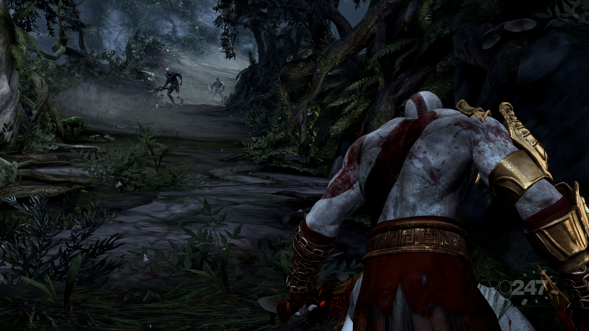

Один из разработчиков игры Стиг Асмуссен заявил о том, что аппаратные возможности PlayStation 3 позволяют придать персонажам God of War III большую гибкость при создании и разрешать большее взаимодействие с окружающей средой. 26 марта 2009 года трейлер с записью игрового процесса был продемонстрирован на Game Developers Conference. В трейлере показывалось, как Кратос недолго сражается с группой солдат, а затем берёт под контроль циклопа для того, чтобы быстро расправиться с врагами, а после того, как солдаты умирают, убивает и циклопа.
В начале марта 2010 года глава команды разработчиков игры Джон Хайт (англ. John Hight) сообщил в интервью GiantBomb , что бюджет игры составил 44 млн долларов.